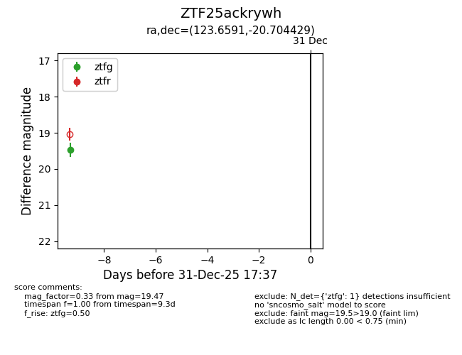
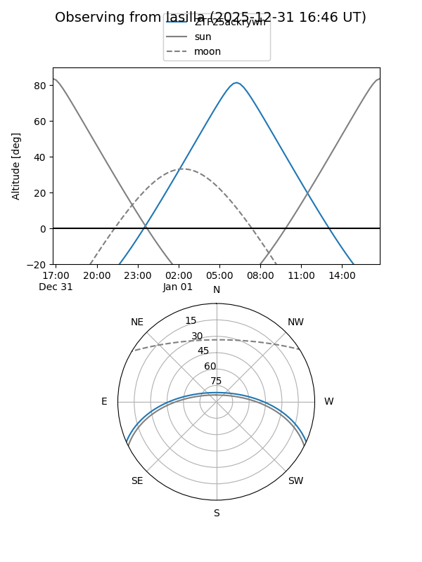
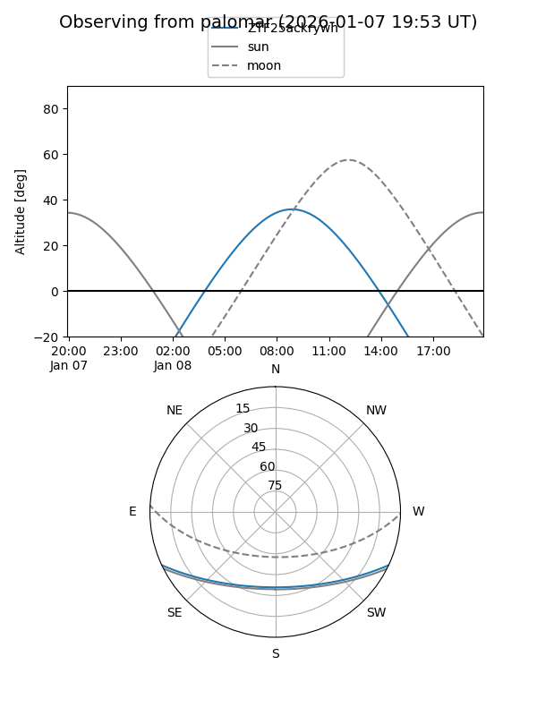

ZTF25ackrywh
Target ZTF25ackrywh at 2025-12-31 17:00
Aliases and brokers:
FINK:
Lasair:
ALeRCE:
alt names
ZTF25ackrywh (ztf,fink_ztf)
Coordinates:
equatorial (ra, dec) = 123.6591,-20.70443
equatorial (HMS+DMS) = 08:14:38.19,-20:42:15.95
galactic (l, b) = (240.9912,+7.72471)
Flags:
Photometry:
last ztfg=19.47
1 ztfg detections
Lightcurve

Visibility


Additional plots